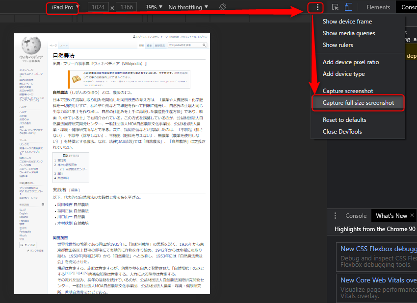

Chromeの覚書 | ワクガンス
Chromeで画面全体のスクリーンショットを撮る
スクリーンショットを撮りたいWEBページを開く
Ctrl + Shift + I
IPadに変更（サイズを大きくする）
右上の設定ボタン
「Chapture full size screenshot」を選択
以上で、スクリーンショット画像がダウンロードされる。

2021-4-27
xxx
2021-4-27
ホーム
プログラミングの覚書
JavaScriptの覚書
Chromeの覚書